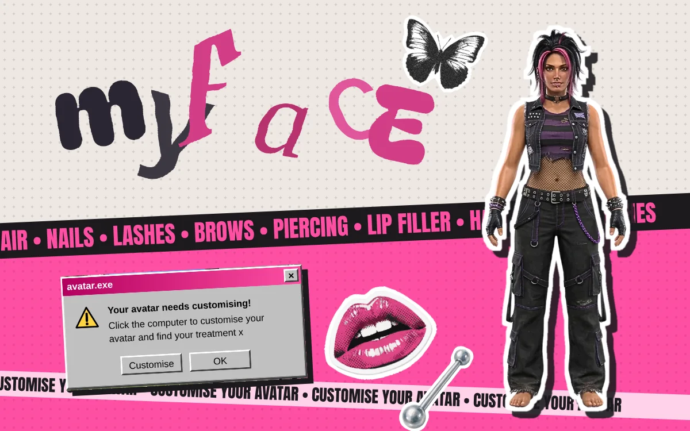

Search · Technical SEO · Local SEO
How I do SEO.
A great website is no use if nobody finds it. I build search in from the first line of code, not as an add-on at the end, so the sites I make get found on Google, even the 3D ones.
What it looks like
The snippet in search results is often the first thing anyone sees of a business. Every page I build gets its own title and description, written for the person searching, with the place and the service up front and nothing cut off.
This site's scores in Google's Lighthouse test.
The groundwork
- Titles and descriptionsUnique on every page, about 50–60 characters for titles and 140–160 for descriptions.
- One clear heading per pageSo Google knows exactly what the page is about.
- Structured dataWho you are, what you sell, your prices, FAQs and breadcrumbs, in the format search engines read.
- Sitemap and canonical linksA map of every page and no duplicates competing with each other.
- Share previewsA proper image and text when a link is posted on WhatsApp, LinkedIn or anywhere else.
- Alt text, speed and accessibilityDescribed images, fast first screens and readable contrast, which Google rewards too.
"@type": "ProfessionalService", "name": "Harrison Greener", "areaServed": [ "Manchester", "Salford", "Stockport", "Brighton", … ], "hasOfferCatalog": { "name": "Packages", "itemListElement": [ … ] }
Local search
One page per place a business really serves, each with its own words, its own nearby areas and its own FAQs. Copy-and-paste town pages get ignored by Google, so I don't make them.
"Lip filler in Manchester" and "gel nails in Manchester" are different searches, so they get different pages, each with prices and answers to common questions.
The listing that puts a business on the map results. I help set it up and match it to the website, so the two back each other up.
On this site: Freelance web designer, Manchester and Freelance web designer, Brighton, each written from scratch for that city.
SEO for 3D sites
Interactive websites often disappear from search, because a 3D scene is just pixels to Google. I build them on top of real pages, so the fun and the findability don't fight each other.
- Real pages underneathEverything you can open in the 3D is also a proper page with text and links.
- Pages from one scriptOn MyFace, 39 pages for every treatment, area and aftercare guide come from one Python file, so a price change updates every page, the sitemap and the structured data at once.
- A fallback for everyoneBrowsers that can't show 3D get a plain page listing everything, so nobody hits a blank screen.

A beauty studio's website as a computer you switch on, with every treatment readable by Google.
Launch and check in
Add the site to Google Search Console and prove you own the domain.
Send Google the sitemap and ask it to index the key pages straight away.
Sort out anything Google trips on, from sitemap errors to missing favicons.
See which searches bring people in, and improve the pages that get seen but not clicked.
Lighthouse SEO score for this site, on both phone and desktop.
Lighthouse best practices score, on both phone and desktop.
pages in this site's sitemap, submitted to Google.
Want to be found?
Every website I build comes with the groundwork. If you already have a site, I can set up Google Search Console, your Business Profile and the page titles and descriptions, from £200.